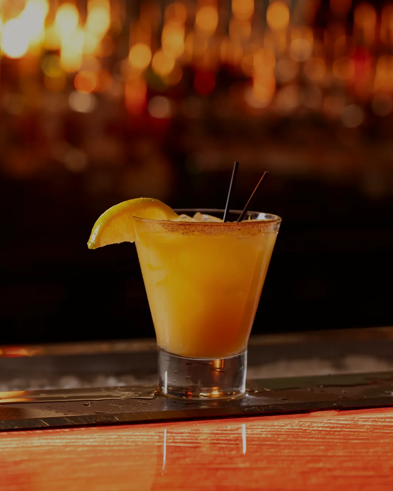
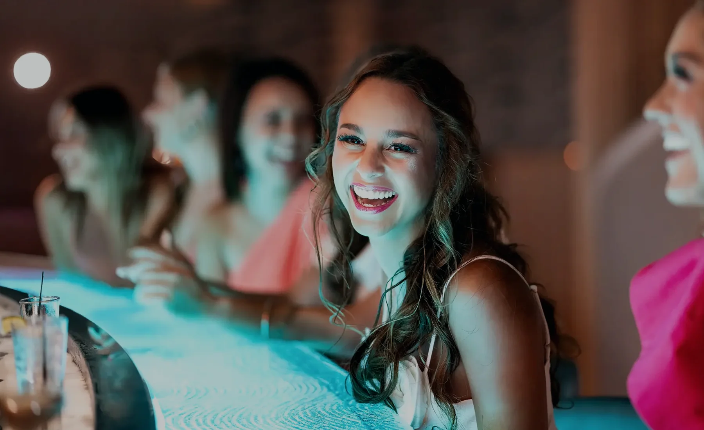

Make every detail intentional.
Preparation, seasoning, temperature, presentation, pacing, and the final touch all communicate whether the work matters.

Our story
Fire & Ice began with an unforgettable room: an open kitchen, a sculptural bar, and a frozen rail unlike anything else in Springfield. The next chapter is about making every detail live up to that setting.
A Springfield original
Located inside the Oasis Hotel & Convention Center, Fire & Ice serves hotel guests, local regulars, convention visitors, families, date nights, and business dinners in one distinctive room. The concept is elemental, but the purpose is human: bring people together and make them feel genuinely cared for.


What we believe
The promise is not that every guest orders the same thing. It is that every choice is treated with the same care.
Preparation, seasoning, temperature, presentation, pacing, and the final touch all communicate whether the work matters.
Guests return when they trust that the food, drinks, service, and atmosphere will deliver—regardless of what they choose.
Great service is confident without being stiff, attentive without hovering, and personal without becoming performative.
The open kitchen, ice rail, cocktails, lighting, and movement should create anticipation while still allowing guests to connect.
Value is not simply portion or price. It is the feeling that the experience gave the guest something worth remembering.
Menus change. Expectations rise. The restaurant should continue learning while staying unmistakably Fire & Ice.

The lasting impression
Fire and ice give the restaurant its language. Hospitality gives it meaning. Our goal is for every guest to leave feeling that the evening was handled with intention from beginning to end.